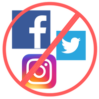

My Projects
My Background
I was introduced to programming in two ways:
- Learning QBASIC in High-School (yep, they still taught that)
- Massive C++ textbook after asking a cousin who worked in the industry about programming
Needless to say, I never touched it again until after graduating from CUNY Hunter College with a BA in Creative Writing.
I went to college while working in New York Public Library, first as a Page and then a Library Technical Assistant. After graduating, I decided to look into tech again since I heard buzz about interesting career opportunities. I was pleasantly surprised when I started learning to program using Ruby. My creative side did not feel supressed as it had when I tried programming in the past.
In fact, bringing my creative side to the machine felt downright delightful. So, I decided to become a programmer!
I love programming using the Ruby language. I am using Ruby on Rails primarily for building things on the web. After familiarizing myself with HTML/CSS, I've started learning more front-end technologies such vanilla Javascript along with React.
Please contact me for job opportunities. Looking forward to it!
Aspirations
Get a FT job in Web Dev space
Maintain a habit of learning
Return to Jiu-Jitsu

Don't follow me on social media. Don't follow anyone. It's basically poison.
Oh but I do have a YouTube channel though.Checkout the playlists if you want to learn Web Development in 2020! And don't forget to subscribe for tutorials and thoughts on coding :)